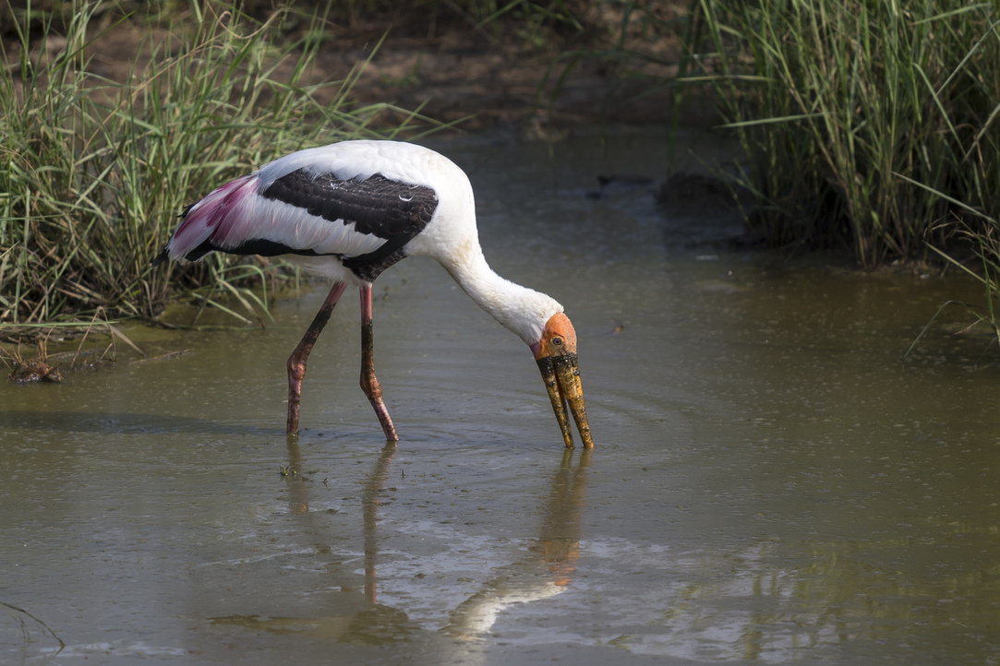
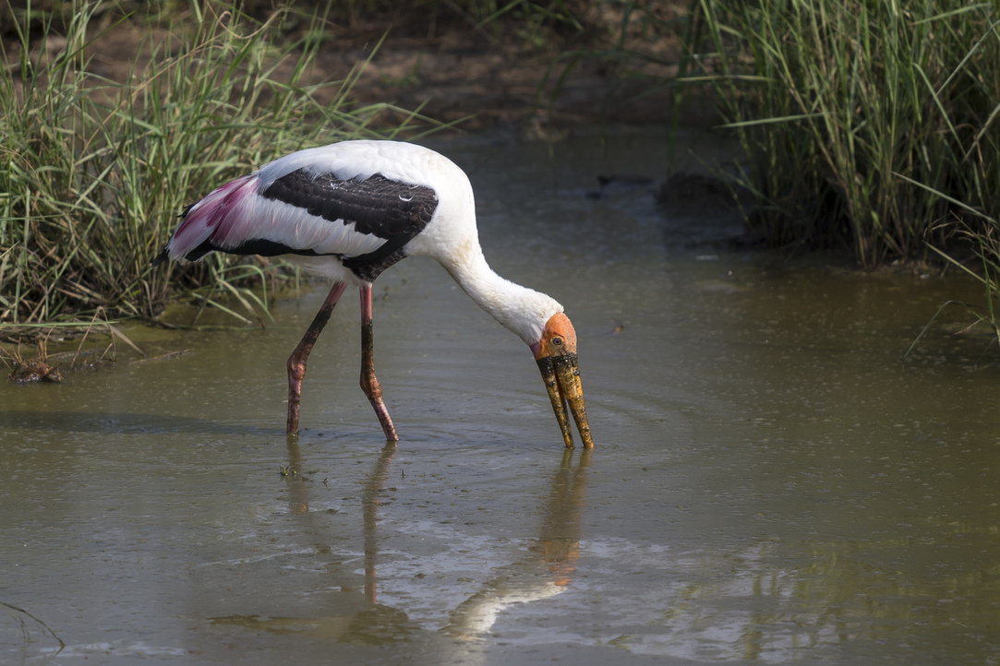
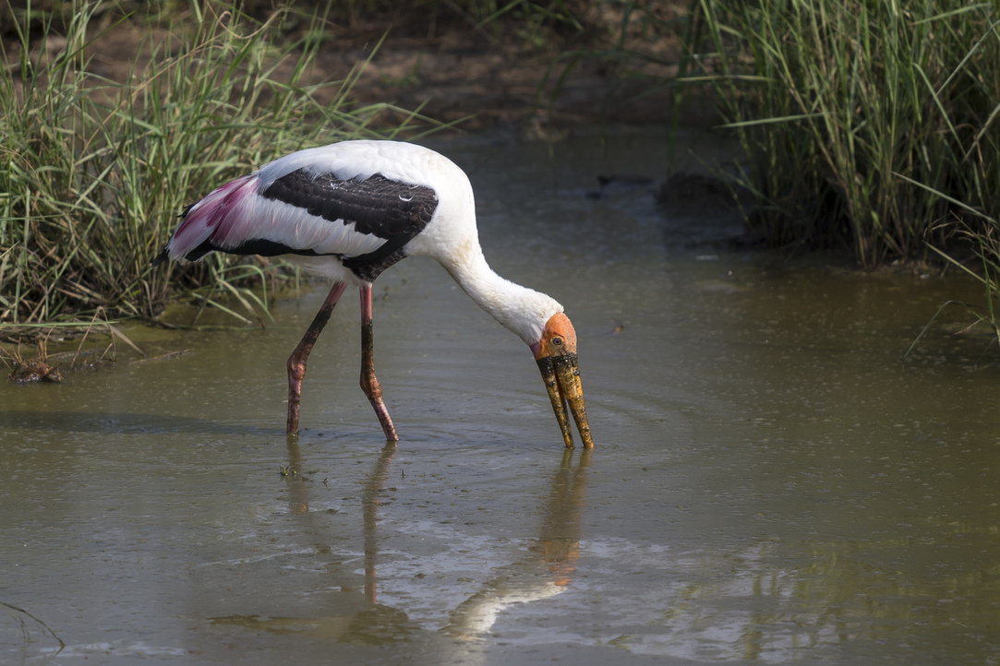

After breakfast..
Safari in Udawalawa National Park, enjoy wild life in Sri Lanka

After Udwalawa safari take fast drive to Benthota
On the way, visit Rathnapura, world famous place for Gems


Stay nigth in Benthota
-